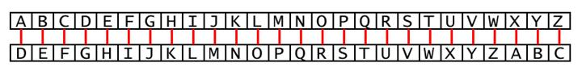

|
|
Capítulo 14 |
Cifrado César |

Temas Tratados En Este Capítulo:
· Criptografía y cifrados
· Encriptar y desencriptar
· Texto cifrado, texto simple, claves y símbolos
· El Cifrado César
· Valores ordinales ASCII
· Las funciones chr() y ord()
· El método de cadena isalpha()
· Los métodos de cadena isupper() & islower()
· Criptoanálisis
· El método de fuerza bruta
El programa de este capítulo no es realmente un juego, pero es un programa divertido. Este programa traduce texto normal a un código secreto. También puede convertir mensajes en el código secreto a texto normal. Sólo alguien que conozca este código secreto podrá entender nuestros mensajes secretos.
Como este programa manipula texto para convertirlo en mensajes secretos, aprenderás varios nuevos métodos y funciones para manipular cadenas. También aprenderás cómo los programas pueden hacer matemática con cadenas de texto así como lo hacen con números.
Criptografía
La ciencia de escribir códigos secretos se llama criptografía. Por miles de años la criptografía ha permitido crear mensajes secretos que sólo el emisor y el receptor podían entender, incluso en caso de que alguien capturase al mensajero y leyese el mensaje codificado. Los sistemas secretos de codificación se llaman cifrados. El cifrado que usa el programa de este capítulo se llama Cifrado César.
En criptografía, llamamos texto plano al mensaje que queremos codificar. El texto plano podría ser algo como esto:
¡Hola! Las llaves de la casa te esperan escondidas bajo la maceta.
El proceso de convertir el texto plano en el mensaje codificado se llama cifrado o encriptación. El texto cifrado también se llama criptograma. El criptograma da un aspecto de ser letras aleatorias, y no es posible entender el texto plano original simplemente mirando el criptograma. Aquí está el criptograma correspondiente a la encriptación del ejemplo anterior:
¡Yfcr! Crj ccrmvj uv cr trjr kv vjgvire vjtfeuzurj sraf cr drtvkr.
Pero si conoces el sistema de cifrado usado para encriptar el mensaje, puedes desencriptar el criptograma y convertirlo en el texto plano. (Desencriptar es lo opuesto a encriptar.)
Muchos cifrados también usan claves. Las claves son valores secretos que permiten desencriptar los criptogramas que fueron encriptados usando un cifrado específico. Piensa en el cifrado como si fuera la cerradura de una puerta. Sólo puedes abrirla con una llave particular.
Si estás interesado en escribir programas de criptografía, puedes leer mi otro libro, “Hacking Secret Ciphers with Python” ("Descifrando Códigos Secretos con Python"). Es gratis y puedes descargarlo de http://inventwithpython.com/hacking.
El Cifrado César
La clave para el Cifrado César será un número entre 1 y 26. A menos que conozcas la clave (es decir, conozcas el número usado para encriptar el mensaje), no podrás desencriptar el código secreto.
El Cifrado César fue uno de los primeros sistemas de cifrado que se inventaron. Con este cifrado, para encriptar un mensaje se toma cada letra del mismo (en criptografía, estas letras se llaman símbolos porque pueden ser letras, números o cualquier otro signo) y se la reemplaza con una letra "desplazada". Si desplazas la letra A un espacio, obtienes la letra B. Si desplazas la A dos espacios, obtienes la letra C. La Figura 14-1 es una ilustración de letras desplazadas tres espacios.

Figura 14-1: Letras desplazadas tres espacios. Aquí B se transforma en E.
Para obtener cada letra desplazada, dibuja una fila de casilleros con cada letra del alfabeto. Luego dibuja una segunda fila de casilleros debajo de ella, pero comienza un cierto número (este número es la clave) de casilleros hacia la derecha. Luego de la última letra, vuelve a comenzar con la primera. Aquí hay un ejemplo con las letras desplazadas tres espacios.

Figura 14-2: El alfabeto completo desplazado tres espacios.
El número de espacios que te desplazas es la clave en el Cifrado César. El ejemplo anterior muestra las traducciones de cada letra para la clave 3.
Si encriptas el texto plano "Adios" con una clave 3, entonces:
· La “A” se convierte en “D”.
· La letra “d” se convierte en “g”.
· La letra “i” se convierte en “l”.
· La letra “o” se convierte en “r”.
· La letra “s” se convierte en “v”.
El criptograma de "Adios" con clave 3 resulta “Dglrv”.
Los caracteres que no correspondan a letras no serán alterados. Para desencriptar "Dglrv" con la clave 3, partimos de la fila inferior de casilleros y volvemos hacia arriba:
· La letra “D” se convierte en “A”.
· La letra “g” se convierte en “d”.
· La letra “l” se convierte en “i”.
· La letra “r” se convierte en “o”.
· La letra “v” se convierte en “s”.
ASCII, y Usando Números por Letras
¿Cómo implementamos este cambio de letras en un programa? Podemos hacer esto representando cada letra como un número llamado ordinal, y luego sumando o restando a este número para formar un nuevo ordinal (y una nueva letra). ASCII (que se pronuncia "asqui" y corresponde a las siglas en inglés de Código Estándar Americano para el Intercambio de Información) es un código que relaciona cada caracter con un número entre 32 y 126.
Las mayúsculas de la "A" a la "Z" reciben números ASCII entre 65 y 90. Las minúsculas de "a" a "z" reciben los números ASCII entre 97 y 122. Los caracteres numéricos de "0" a "9" reciben números ASCII de 48 a 57. La Tabla 14-1 muestra todos los caracteres y ordinales ASCII.
Las computadoras modernas usan UTF-8 en lugar de ASCII. Pero UTF-8 es compatible con ASCII, de modo que los ordinales UTF-8 para los caracteres ASCII son los mismos que los ordinales ASCII.
Tabla 14-1: La Tabla ASCII
|
32 |
espacio |
48 |
0 |
64 |
@ |
80 |
P |
96 |
` |
112 |
p |
|
33 |
! |
49 |
1 |
65 |
A |
81 |
Q |
97 |
a |
113 |
q |
|
34 |
" |
50 |
2 |
66 |
B |
82 |
R |
98 |
b |
114 |
r |
|
35 |
# |
51 |
3 |
67 |
C |
83 |
S |
99 |
c |
115 |
s |
|
36 |
$ |
52 |
4 |
68 |
D |
84 |
T |
100 |
d |
116 |
t |
|
37 |
% |
53 |
5 |
69 |
E |
85 |
U |
101 |
e |
117 |
u |
|
38 |
& |
54 |
6 |
70 |
F |
86 |
V |
102 |
f |
118 |
v |
|
39 |
' |
55 |
7 |
71 |
G |
87 |
W |
103 |
g |
119 |
w |
|
40 |
( |
56 |
8 |
72 |
H |
88 |
X |
104 |
h |
120 |
x |
|
41 |
) |
57 |
9 |
73 |
I |
89 |
Y |
105 |
i |
121 |
y |
|
42 |
* |
58 |
: |
74 |
J |
90 |
Z |
106 |
j |
122 |
z |
|
43 |
+ |
59 |
; |
75 |
K |
91 |
[ |
107 |
k |
123 |
{ |
|
44 |
, |
60 |
< |
76 |
L |
92 |
\ |
108 |
l |
124 |
| |
|
45 |
- |
61 |
= |
77 |
M |
93 |
] |
109 |
m |
125 |
} |
|
46 |
. |
62 |
> |
78 |
N |
94 |
^ |
110 |
n |
126 |
~ |
|
47 |
/ |
63 |
? |
79 |
O |
95 |
_ |
111 |
o |
|
|
Entonces, si quisieras desplazar la "A" tres espacios, deberías hacer lo siguiente:
· Convertir “A” en un ordinal (65).
· Sumar 3 a 65, para obtener 68.
· Reconvertir el ordinal 68 a la letra correspondiente (“D”).
Las funciones chr() y ord() pueden convertir de ordinales a caracteres y viceversa.
Las Funciones chr() y ord()
La función chr() (se pronuncia "char", abreviatura de "caracter") toma un ordinal entero y devuelve una cadena de un único caracter. La función ord() (abreviatura de "ordinal") toma una cadena de un solo caracter y devuelve su valor ordinal entero. Intenta ingresar lo siguiente en la consola interactiva:
>>> chr(65)
'A'
>>> ord('A')
65
>>> chr(65+8)
'I'
>>> chr(52)
'4'
>>> chr(ord('F'))
'F'
>>> ord(chr(68))
68
En la tercera línea, chr(65+8) se evalúa a chr(73). Si miras la tabla ASCII, puedes ver que 73 es el ordinal para la letra mayúscula "I".
En la quinta línea, chr(ord('F')) se evalúa a chr(70) que a su vez se evalúa a 'F'. Las funciones ord() y chr() son opuestas entre sí.
Prueba de Ejecución de Cifrado César
Aquí hay una prueba de ejecución del programa Cifrado César, encriptando un mensaje:
¿Deseas encriptar o desencriptar un mensaje?
encriptar
Ingresa tu mensaje:
El cielo sobre el puerto era el color del televisor, sintonizando un canal muerto.
Ingresa el número de clave (1-26)
13
Tu texto traducido es:
Ry pvryb fboer ry chregb ren ry pbybe qry gryrivfbe, fvagbavmnaqb ha pnany zhregb.
Ahora ejecuta el programa y desencripta el texto que acabas de encriptar.
¿Deseas encriptar o desencriptar un mensaje?
desencriptar
Ingresa tu mensaje:
Ry pvryb fboer ry chregb ren ry pbybe qry gryrivfbe, fvagbavmnaqb ha pnany zhregb.
Ingresa el número de clave (1-26)
13
Tu texto traducido es:
El cielo sobre el puerto era el color del televisor, sintonizando un canal muerto.
Si no desencriptas con la clave correcta, el texto desencriptado será basura:
¿Deseas encriptar o desencriptar un mensaje?
desencriptar
Ingresa tu mensaje:
Ry pvryb fboer ry chregb ren ry pbybe qry gryrivfbe, fvagbavmnaqb ha pnany zhregb.
Ingresa el número de clave (1-26)
15
Tu texto traducido es:
Cj agcjm qmzpc cj nscprm cpy cj amjmp bcj rcjctgqmp, qglrmlgxylbm sl aylyj kscprm.
Código Fuente de Cifrado César
Aquí está el código fuente para el programa Cifrado César. Luego de escribir este código, guarda el archivo como cifrado.py. Si obtienes errores, compara el código que has escrito con el código fuente del libro usando la herramienta diff online en http://invpy.com/es/diff/cifrado.
cifrado.py
1. # Cifrado Cesar
2.
3. TAM_MAX_CLAVE = 26
4.
5. def obtenerModo():
6. while True:
7. print('¿Deseas encriptar o desencriptar un mensaje?')
8. modo = input().lower()
9. if modo in 'encriptar e desencriptar d'.split():
10. return modo
11. else:
12. print('Ingresa "encriptar" o "e" o "desencriptar" o "d"')
13.
14. def obtenerMensaje():
15. print('Ingresa tu mensaje:')
16. return input()
17.
18. def obtenerClave():
19. clave = 0
20. while True:
21. print('Ingresa el número de clave (1-%s)' % (TAM_MAX_CLAVE))
22. clave = int(input())
23. if (clave >= 1 and clave <= TAM_MAX_CLAVE):
24. return clave
25.
26. def obtenerMensajeTraducido(modo, mensaje, clave):
27. if modo[0] == 'd':
28. clave= -clave
29. traduccion = ''
30.
31. for simbolo in mensaje:
32. if simbolo.isalpha():
33. num = ord(simbolo)
34. num += clave
35.
36. if simbolo.isupper():
37. if num > ord('Z'):
38. num -= 26
39. elif num < ord('A'):
40. num += 26
41. elif simbolo.islower():
42. if num > ord('z'):
43. num -= 26
44. elif num < ord('a'):
45. num += 26
46.
47. traduccion += chr(num)
48. else:
49. traduccion += simbolo
50. return traduccion
51.
52. modo = obtenerModo()
53. mensaje = obtenerMensaje()
54. clave = obtenerClave()
55.
56. print('Tu texto traducido es:')
57. print(obtenerMensajeTraducido(modo, mensaje, clave))
Cómo Funciona el Código
Los procesos de encriptación y desencripción son inversos el uno del otro, y aún así utilizan en gran medida el mismo código. Veamos cómo funciona cada línea.
1. # Cifrado Cesar
2.
3. TAM_MAX_CLAVE = 26
La primera línea es simplemente un comentario. TAM_MAX_CLAVE es una constante que almacena al entero 26. TAM_MAX_CLAVE nos recuerda que en este programa, la clave usada para el cifrado debe estar comprendida entre 1 y 26.
Decidiendo si Encriptar o Desencriptar
5. def obtenerModo():
6. while True:
7. print('¿Deseas encriptar o desencriptar un mensaje?')
8. modo = input().lower()
9. if modo in 'encriptar e desencriptar d'.split():
10. return modo
11. else:
12. print('Ingresa "encriptar" o "e" o "desencriptar" o "d"')
La función obtenerModo() permite al usuario elegir si quieren entrar al modo de cifrado o descifrado del programa. El valor devuelto de input() y lower() se almacena en modo. La condición de la sentencia if comprueba si la cadena almacenada en modo existe en la lista devuelta por 'encriptar e desencriptar d'.split().
Esta lista es ['encriptar', 'e', 'desencriptar', 'd'], pero es más fácil para el programador escribir 'encriptar e desencriptar d'.split() y no tener que escribir todas esas comas y comillas. Usa la forma que sea más fácil para tí; ambas son evaluadas al mismo valor de lista.
Esta función devolverá la cadena en modo siempre que modo sea igual a 'encriptar', 'e', 'desencriptar' o 'd'. Entonces, obtenerModo() devolverá la cadena 'e' o la cadena 'd' (pero el usuario puede escribir “e”, “encriptar”, “d” o “desencriptar”.)
Obteniendo el Mensaje del Jugador
14. def obtenerMensaje():
15. print('Ingresa tu mensaje:')
16. return input()
La función obtenerMensaje() simplemente obtiene el mensaje a encriptar o desencriptar del usuario y devuelve este valor.
Obteniendo la Clave del Jugador
18. def obtenerClave():
19. clave = 0
20. while True:
21. print('Ingresa el número de clave (1-%s)' % (TAM_MAX_CLAVE))
22. clave = int(input())
23. if (clave >= 1 and clave <= TAM_MAX_CLAVE):
24. return clave
La función obtenerClave() permite al jugador escribir la clave que desea usar para encriptar o desencriptar el mensaje. El bucle while asegura que la función se mantenga ciclando hasta que el usuario ingrese una clave válida.
Una clave válida es aquella que está comprendida entre los valores enteros 1 y 26 (recuerda que TAM_MAX_CLAVE tendrá siempre el valor 26 porque es constante). La función devuelve entonces esta clave. La línea 22 establece la clave como la versión entera de lo que el jugador haya escrito, de modo que obtenerClave() devuelve un entero.
Encriptar o Desencriptar el Mensaje con la Clave Dada
26. def obtenerMensajeTraducido(modo, mensaje, clave):
27. if modo[0] == 'd':
28. clave= -clave
29. traduccion = ''
obtenerMensajeTraducido() realiza la encriptación y desencriptación. Tiene tres parámetros:
· modo elige entre los modos de encriptación y desencriptación.
· mensaje es el texto plano (o criptograma) a encriptar (o desencriptar).
· clave es la clave numérica a usar para este cifrado.
La línea 27 comprueba si la primera letra en la variable modo es la cadena 'd'. En ese caso, el programa entra en modo de desencriptación. La única diferencia entre los modos de desencriptación y encriptación es que para desencriptar un mensaje se usa la versión negativa de la clave. Si clave fuera el entero 22, entonces en modo de desencriptación clave se transforma en -22. Explicaremos la razón de esto más adelante.
traduccion es la cadena que contiene al resultado, es decir, el criptograma (ei estás encriptando) o el texto plano (si estás desencriptando). Comienza como una cadena vacía a cuyo final se van añadiendo caracteres encriptados o desencriptados.
El Método de Cadena isalpha()
El método de cadena isalpha() devolverá True si la cadena es una letra mayúscula o minúscula entre A y Z. Si la cadena contiene algún caracter no alfabético, entonces isalpha() devolverá False. Prueba ingresar lo siguiente en la consola interactiva:
>>> 'Hola'.isalpha()
True
>>> 'Cuarenta y dos'.isalpha()
False
>>> 'Cuarentaydos'.isalpha()
True
>>> '42'.isalpha()
False
>>> ''.isalpha()
False
Como puedes observar, 'Cuarenta y dos'.isalpha() devuelve False porque 'Cuarenta y dos' incluye dos espacios, los cuales son caracteres no alfabéticos. 'Cuarentaydos'.isalpha() devuelve True porque no contiene espacios.
'42'.isalpha() devuelve False porque ni '4' ni '2' son letras. isalpha() sólo devuelve True si la cadena no está vacía y está compuesta únicamente por letras.
El método isalpha() se usa en las siguientes líneas del programa.
31. for simbolo in mensaje:
32. if simbolo.isalpha():
33. num = ord(simbolo)
34. num += clave
El bucle for de la línea 31 itera sobre cada letra (en criptografía se llaman símbolos) de la cadena del mensaje. En cada iteración sobre este bucle, simbolo tendrá el valor de una letra en el mensaje.
La línea 32 está presente porque sólo las letras serán encriptadas o desencriptadas. Los números, signos de puntuación y todo lo demás conservará su forma original. La variable num almacenará el valor ordinal entero de la letra en la variable simbolo. La línea 34 “desplaza” entonces el valor de num en el número de casilleros correspondiente a la clave.
Los Métodos de Cadena isupper() e islower()
Los métodos de cadena isupper() e islower() (los cuales utilizamos en las líneas 36 y 41) funcionan de forma similar a los métodos isdigit() e isalpha().
isupper() devuelve True si la cadena sobre la cual es llamado contiene al menos una letra mayúscula y ninguna minúscula. islower() devuelve True si la cadena sobre la cual es llamado contiene al menos una letra minúscula y ninguna mayúscula. De otro modo estos métodos devuelven False.
Prueba ingresar lo siguiente en la consola interactiva:
>>> 'HOLA'.isupper()
True
>>> 'hola'.isupper()
False
>>> 'hola'.islower()
True
>>> 'Hola'.islower()
False
>>> 'CUIDADO DETRAS DE TI!'.isupper()
True
>>> '42'.isupper()
False
>>> '42'.islower()
False
>>> ''.isupper()
False
>>> ''.islower()
False
Encriptando o Desencriptando Cada Letra
36. if simbolo.isupper():
37. if num > ord('Z'):
38. num -= 26
39. elif num < ord('A'):
40. num += 26
La línea 36 comprueba si el símbolo es una letra mayúscula. Si lo es, hay dos casos especiales a tener en cuenta. Qué ocurriría si el símbolo fuese 'Z' y la clave 4? En este caso, el valor de num aquí sería el caracter '^' (El ordinal de '^' es 94). Pero ^ no es ninguna letra. Y nosotros queremos que el criptograma "reinicie la vuelta" por el principio del alfabeto.
Comprobamos si num tiene un valor mayor que el valor ordinal de “Z”. Si es así, restamos 26 a num (porque hay 26 letras en total). Luego de hacer esto, el valor de num es 68. 68 es el valor ordinal correcto ya que corresponde a 'D'.
41. elif simbolo.islower():
42. if num > ord('z'):
43. num -= 26
44. elif num < ord('a'):
45. num += 26
Si el símbolo es una letra minúscula, el programa ejecuta un código que es similar a las líneas 36 a 40. la única diferencia es que utiliza ord('z') y ord('a') en lugar de ord('Z') y ord ('A').
En modo desencriptación, la clave es negativa. El caso especial sería si num -= 26 es menor que el valor ASCII de “a”. En ese caso, sumamos 26 a num para que “reinicie la vuelta” por el final del alfabeto.
47. traduccion += chr(num)
48. else:
49. traduccion += simbolo
La línea 47 concatena el caracter encriptado/desencriptado a la cadena traducida.
Si el símbolo no es una letra mayúscula o minúscula, la línea 49 concatena el símbolo original a la cadena traducida. Por lo tanto, espacios, números, signos de puntuación y otros caracteres no serán encriptados o desencriptados.
50. return traduccion
La última línea en la función obtenerMensajeTraducido() devuelve la cadena traducida.
El Inicio del Programa
52. modo = obtenerModo()
53. mensaje = obtenerMensaje()
54. clave = obtenerClave()
55.
56. print('Tu texto traducido es:')
57. print(obtenerMensajeTraducido(modo, mensaje, clave))
El comienzo del programa llama a cada una de las tres funciones definidas anteriormente para obtener el modo, el mensaje y la clave del usuario. Estos tres valores son pasados a obtenerMensajeTraducido(), cuyo valor de retorno (la cadena traducida) es mostrada en pantalla al usuario.
Fuerza Bruta
Eso es todo con respecto al Cifrado César. Sin embargo, a pesar de que este cifrado puede engañar a gente que no entiende criptografía, no será suficiente para alguien que sepa de criptoanálisis. Así como criptografía es la ciencia de crear códigos, criptoanálisis es la ciencia de descifrarlos.
¿Deseas encriptar o desencriptar un mensaje?
encriptar
Ingresa tu mensaje:
La duda puede no ser agradable, pero la certeza es absurda.
Ingresa el número de clave (1-26)
8
Tu texto traducido es:
Ti lcli xcmlm vw amz iozilijtm, xmzw ti kmzbmhi ma ijaczli.
La idea central de la criptografía es que si alguien más consigue apoderarse del mensaje encriptado, no consiga obtener la información del mensaje original sin encriptar. Hagamos de cuenta que somos descifradores de códigos y todo lo que tenemos es el texto encriptado:
Ti lcli xcmlm vw amz iozilijtm, xmzw ti kmzbmhi ma ijaczli.
Fuerza bruta es la técnica de probar cada todas las claves posibles hasta encontrar la correcta. Como hay sólo 26 claves posibles, sería fácil para un criptoanalista escribir un programa que desencriptara con todas las claves posibles. Luego podría fijarse cuál de las claves resulta en un mensaje en Español. Agreguemos un modo de fuerza bruta a nuestro programa.
Agregando el Modo de Fuerza Bruta
Primero, cambiamos las líneas 7, 9 y 12 (que están dentro de la función obtenerModo()) para convertirlas en lo siguiente (los cambios están en negrita):
5. def obtenerModo():
6. while True:
7. print('¿Deseas encriptar, desencriptar o descifrar por fuerza bruta un mensaje?')
8. modo = input().lower()
9. if modo in 'encriptar e desencriptar d bruta b'.split():
10. return modo[0]
11. else:
12. print('Ingresa "encriptar" o "e" o "desencriptar" o "d" o "bruta" o "b".')
Este código permitirá al usuario elegir "fuerza bruta" como un modo. Modifica y agrega los siguientes cambios a la parte principal del programa:
52. modo = getMode()
53. mensaje = obtenerMensaje()
54. if modo[0] != 'b':
55. clave = obtenerClave()
56.
57. print('Tu texto traducido es:')
58. if modo[0] != 'b':
59. print(obtenerMensajeTraducido(modo, mensaje, clave))
60. else:
61. for clave in range(1, TAM_MAX_CLAVE + 1):
62. print(clave, obtenerMensajeTraducido('desencriptar', mensaje, clave))
Estos cambios piden una clave al usuario si no se encuentra en el modo de "fuerza bruta". Se efectúa entonces la llamada original a obtenerMensajeTraducido() y se muestra la cadena traducida.
Sin embargo, si el usuario está en el modo de "fuerza bruta" entonces obtenerMensajeTraducido() se ejecuta en un bucle que recorre todos los valores entre 1 y TAM_MAX_CLAVE (que es 26). Recuerda que la función range() devuelve una lista de enteros hasta el segundo parámetro pero sin incluirlo, por lo que agregamos + 1 a la expresión. Este programa imprimirá en la pantalla cada posible traducción del mensaje (incluyendo el número de clave usado para la traducción). Aquí hay una prueba de ejecución del programa modificado:
¿Deseas encriptar, desencriptar o descifrar por fuerza bruta un mensaje?
bruta
Ingresa tu mensaje:
Ti lcli xcmlm vw amz iozilijtm, xmzw ti kmzbmhi ma ijaczli.
Tu texto traducido es:
1 Sh kbkh wblkl uv zly hnyhkhisl, wlyv sh jlyalgh lz hizbykh.
2 Rg jajg vakjk tu ykx gmxgjghrk, vkxu rg ikxzkfg ky ghyaxjg.
3 Qf izif uzjij st xjw flwfifgqj, ujwt qf hjwyjef jx fgxzwif.
4 Pe hyhe tyihi rs wiv ekvehefpi, tivs pe givxide iw efwyvhe.
5 Od gxgd sxhgh qr vhu djudgdeoh, shur od fhuwhcd hv devxugd.
6 Nc fwfc rwgfg pq ugt citcfcdng, rgtq nc egtvgbc gu cduwtfc.
7 Mb eveb qvfef op tfs bhsbebcmf, qfsp mb dfsufab ft bctvseb.
8 La duda puede no ser agradable, pero la certeza es absurda.
9 Kz ctcz otdcd mn rdq zfqzczakd, odqn kz bdqsdyz dr zartqcz.
10 Jy bsby nscbc lm qcp yepybyzjc, ncpm jy acprcxy cq yzqspby.
11 Ix arax mrbab kl pbo xdoxaxyib, mbol ix zboqbwx bp xyproax.
12 Hw zqzw lqaza jk oan wcnwzwxha, lank hw yanpavw ao wxoqnzw.
13 Gv ypyv kpzyz ij nzm vbmvyvwgz, kzmj gv xzmozuv zn vwnpmyv.
14 Fu xoxu joyxy hi myl ualuxuvfy, jyli fu wylnytu ym uvmolxu.
15 Et wnwt inxwx gh lxk tzktwtuex, ixkh et vxkmxst xl tulnkwt.
16 Ds vmvs hmwvw fg kwj syjsvstdw, hwjg ds uwjlwrs wk stkmjvs.
17 Cr ulur glvuv ef jvi rxirurscv, gvif cr tvikvqr vj rsjliur.
18 Bq tktq fkutu de iuh qwhqtqrbu, fuhe bq suhjupq ui qrikhtq.
19 Ap sjsp ejtst cd htg pvgpspqat, etgd ap rtgitop th pqhjgsp.
20 Zo riro disrs bc gsf ouforopzs, dsfc zo qsfhsno sg opgifro.
21 Yn qhqn chrqr ab fre ntenqnoyr, creb yn pregrmn rf nofheqn.
22 Xm pgpm bgqpq za eqd msdmpmnxq, bqda xm oqdfqlm qe mnegdpm.
23 Wl ofol afpop yz dpc lrclolmwp, apcz wl npcepkl pd lmdfcol.
24 Vk nenk zeono xy cob kqbknklvo, zoby vk mobdojk oc klcebnk.
25 Uj mdmj ydnmn wx bna jpajmjkun, ynax uj lnacnij nb jkbdamj.
26 Ti lcli xcmlm vw amz iozilijtm, xmzw ti kmzbmhi ma ijaczli.
Luego de examinar cada columna, puedes ver que el 8vo mensaje no es basura, sino texto en español. El criptoanalista puede deducir que la clave original de este mensaje encriptado debe haber sido 8. Este método de fuerza bruta habría sido difícil de emplear en los tiempos del César y del imperio romano, pero hoy en día tenemos computadoras que pueden examinar millones de claves rápidamente.
Resumen
Las computadoras son muy efectivas para hacer operaciones matemáticas. Cuando creamos un sistema para traducir fragmentos de información a números (así como hacemos con texto y ordinales o con información espacial y sistemas de coordenadas), los programas de computadora pueden procesar estos números en forma rápida y eficiente.
Pero aunque nuestro programa de cifrado César puede encriptar mensajes y mantenerlos secretos para gente que sólo tiene a disposición papel y lápiz, no conseguirá ocultarlos a gente que sepa cómo hacer que una computadora procese información por ellos. (Nuestro modo de fuerza bruta lo comprueba.)
Una parte fundamental del proceso de escribir un programa es entender cómo representar la información que queremos manipular utilizando valores que Python puede comprender.
El próximo capítulo presentará Reversi (también conocido como Othello). La IA que maneja este juego es mucho más avanzada que la IA que diseñamos para el Ta Te Ti en el capítulo 9. De hecho, la IA es tan buena que... ¡te vencerá en casi todas las partidas!